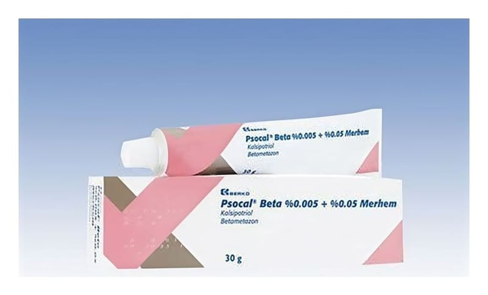

Psocal Beta % 0.005+ % 0.05 Merhem

Ne için kullanılır
KT · Bölüm 1• PSOCAL BETA kalsipotriol (D vitaminine benzer bir madde) ve betametazon (bir steroid) etkin maddelerini içerir. Kalsipotriol deri hücrelerinin büyüme oranının normale dönmelerini sağlar. Bir kortikosteroid olan betametazon iltihabın (enflamasyon) azalmasını sağlar (bazı vücut geliştiriciler ve atletler tarafından hatalı bir şekilde kullanılan anabolik steroidlerle karıştırılmamalıdır).
• PSOCAL BETA sedef hastalığının (psoriasis vulgaris) tedavisi için kullanılır. Sedef hastalığı, deri hücreleri çok hızlı çoğalmaya başladığı zaman oluşur. Bu kızarıklık, pullanma ve derinin kalınlaşmasına neden olur.
• PSOCAL BETA sedef hastalığının belirtilerini tedavi eder ve hızla çoğalan derideki hücrelerin normale dönmesine yardımcı olur.
• PSOCAL BETA, merhem formunda 30 gramlık alüminyum tüplerde kullanıma sunulmaktadır.